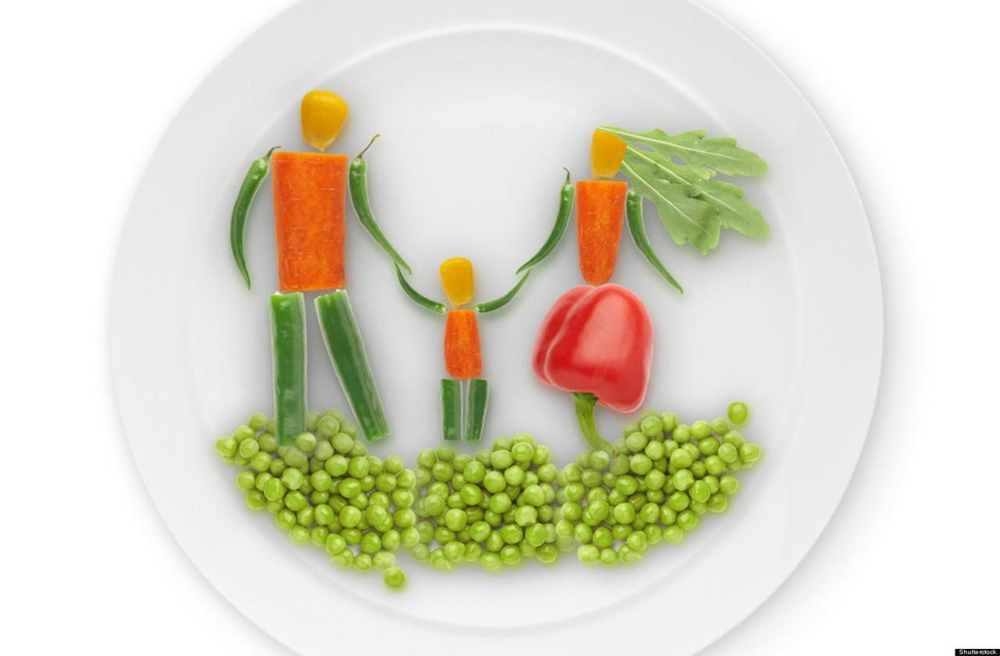

Kalori Alımının Önemi
Çok Düşük Kalorilerle Beslenmeyin
Kilo vermenin en basit açıklaması matematikten geçer. Yaktığımız kaloriden daha az kalori alırsak kilo veririz. Buna kalorik açık yaratmak deriz. Oldukça basit aslında. O zaman neden aldığımız kaloriyi iyice düşürüp daha çok kilo vermeyelim? Eğer çok düşük kalori ile beslenirsek, vücut direncinde düşme, hastalık, bitkinlik, kas kaybı gibi durumlarla karşılaşabiliriz. Bu da uzun vadede metabolizmanın yavaşlamasına ve kilo vermenin daha da zorlaşmasına yol açabilir.
Çözüm olarak kendimizi aç bırakmak yerine, dengeli ve düzenli beslenerek kilomuzu takip etmeliyiz. Kilo vermek için sabırlı olup fiziksel aktiviteyi arttırmak en sağlıklı ve verimli yol olacaktır. Bu sayede, zamanla kilo verme sürecimizi izleyerek, kilo veremediğimizde aktiviteyi arttırarak kalori yakabilir veya kaloriyi daha da düşürebiliriz. Bu sayede kilo vermeye başladığımızda aç kalıp, güçsüzleşmek yerine yaptığımız spor ile birlikte daha verimli ve uzun vadeli kilo verebiliriz.
Özellikle bazal metabolizmanın altında beslenmemeliyiz. Bazal metabolizma nedir? Vücudunuzun dinlenme halindeyken, hiç hareket etmeseniz dahi yaktığı kalori değeridir. Bu kalori değer vücudumuzun hayati fonksiyonlarını düzgün bir şekilde yerine getirmesi için gereklidir. Dolayısıyla dinlenirken vücudumuzun harcadığı enerjiden daha azını vücudumuza almak kesinlikle vücut direncini düşürecektir. Vücudumuz düzgün çalışmazken sağlıklı kilo vermekten söz edemeyiz.